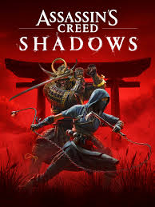
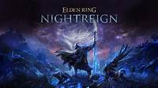
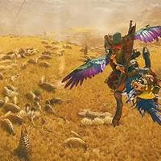
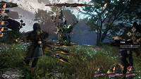

2025 yılı, oyun dünyası için birbirinden heyecan verici yapımlarla dolu bir yıl olmaya devam ediyor. İşte son dönemde piyasaya sürülen ve dikkat çeken bazı yeni oyunlar:
Ubisoft'un popüler serisinin bu yeni oyunu, oyuncuları feodal Japonya'ya götürüyor. Samuraylar ve ninjaların dünyasında geçen bu macera, serinin hayranları için kaçırılmayacak bir deneyim sunuyor.
FromSoftware'ın beğenilen oyunu Elden Ring'in devamı olan Nightreign, oyuncuları karanlık ve gizemli bir dünyada yeni maceralara davet ediyor. Zorlu düşmanlar ve derin bir hikâye ile dikkat çekiyor.
Capcom'un sevilen serisinin bu yeni oyunu, açık dünya yapısıyla oyunculara devasa canavarları avlama fırsatı sunuyor. Gelişmiş grafikler ve yenilikçi oynanış mekanikleriyle öne çıkıyor.
Hideo Kojima'nın sıra dışı oyunu Death Stranding'in devamı olan bu yapım, oyuncuları insanlığı kurtarma görevine çağırıyor. Derin hikâyesi ve etkileyici atmosferiyle dikkat çekiyor.
Sandfall Interactive tarafından geliştirilen bu RPG, yenilikçi oynanışı ve etkileyici grafikleriyle 2025'in en dikkat çeken oyunlarından biri. Oyuncular, Gustave ve ekibinin maceralarına katılıyor.
